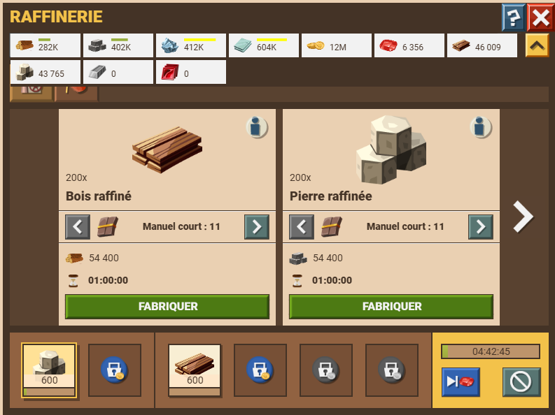
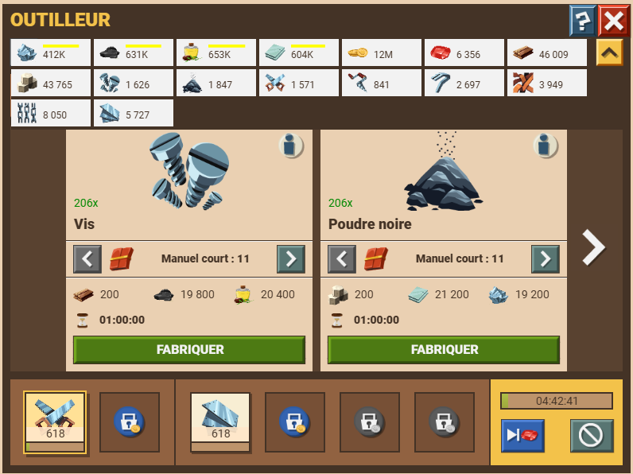
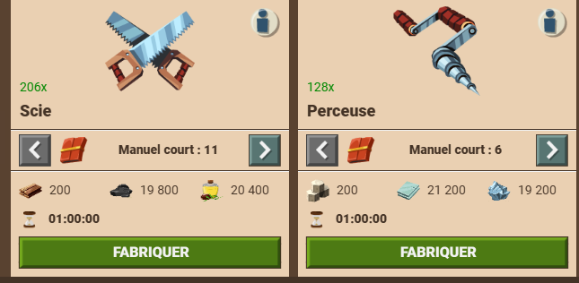
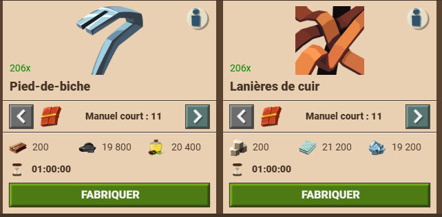
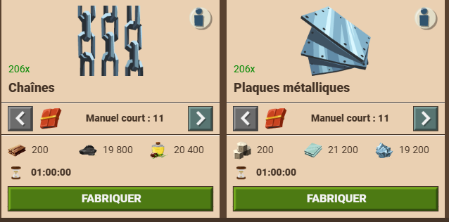

La raffinerie et l'outilleur sont desbâtiments indispensables pour produire des engins "combinés", dès lors que les ateliers niveau 4 sont débloqués. Un autre avantage de ces bâtiment est d'augmenter fortement la capacité de stockage des ressources, jusqu'à 370k pour le charbon-huile-verr-fer avec l'outilleur lvl 4 et 700k pour le bois-pierre avec la raffinerie lvl 4. Avant de pouvoir les construires, il faut bien sûr avoir débloqué ces bâtiments dans la salle des légendes. Pour agugmenter la quantité de ressources raffinnées ou de composants d'artisanats pouvant être produit, il faut rechercher les manuels de fabrication dans la tour de recherche. Attention, ces recherches peuvent coûter assez cher en pièce, il peut alors être utile de gagner plus de pièce en échangeant de l'aigue marine (barge de Luna) ou avec la stratégie ressource royaumes, voir en attaquant avec des vagues remplies de tirelire samou/nomade lors de ces deux event. À noter qu'il y a 3 façon de produire ces ressources :
La raffinerie est un bâtiment qui permet de produire des ressources raffinées à partir de bois et de pierre. Soit de la pierre raffinnée ou du bois raffiné.

L'outilleur est un bâtiment qui permet de produire des composantes d'artisanat. Ces composantes ont fabriquées à partir de ressources (charbon-huile-verre-fer) et de ressources raffinnées. Ce sont les composantes d'artisanat qui sont utilisées pour produire des engins combinés. Il y a plusieurs composantes : vis, poudre noire, scie, perçeuse, pied-de-biche, lanière de cuir, chaînes, plaques métalliques.




Pour accroître la production de ressources rafinnées/composants d'artisanats, il y a deux objets à rechercher daans la tour de recherche. Au niveau maximum, le gain de productivité est de 30%, donc à ne pas négliger. Le problème réside dans le coût d'amélioration de cet objet, et dans le coût de recherche du plan de construction :
Pour réunir les ressources au plus vite, participer au lacis et échanger desressources royaumes contre des pièces est essentiel.